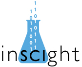

Projects
Fiscally Sponsored Projects
AstroPy
The Astropy Project is a community effort to develop a single core package for Astronomy in Python and foster interoperability between Python astronomy packages.
Data Carpentry

Data Carpentry, a sister organization to Software Carpentry, aims to teach basic concepts, skills and tools for working more effectively with data. We are a community that develops lessons and runs workshops to teach researchers the skills to organize, manage and analyze data in a more efficient and reproducible way.
IPython

High quality open source Python shell that includes tools for high level and interactive parallel computing.
Julia
Julia is a high-level, high-performance dynamic programming language for technical computing, with syntax that is familiar to users of other technical computing environments. It provides a sophisticated compiler, distributed parallel execution, numerical accuracy, and an extensive mathematical function library. The library, largely written in Julia itself, also integrates mature, best-of-breed C and Fortran libraries for linear algebra, random number generation, signal processing, and string processing. In addition, the Julia developer community is contributing a number of external packages through Julia’s built-in package manager at a rapid pace. IJulia, a collaboration between the IPython and Julia communities, provides a powerful browser-based graphical notebook interface to Julia.
Julia programs are organized around multiple dispatch; by defining functions and overloading them for different combinations of argument types, which can also be user-defined. For a more in-depth discussion of the rationale and advantages of Julia over other systems, see the following highlights or read the introduction in the online manual.
rOpenSci
rOpenSci is a software collective that provides R based tools to enable access to scientific data repositories, full-text of articles, and science metrics and also facilitate a culture shift in the scientific community towards reproducible research practices.
Software Carpentry
Our mission is to help scientists be more productive by teaching them basic computing skills. Our approach combines short, intensive workshops with self-paced online instruction. The benefits are more reliable results and higher productivity: a day a week is common, and a ten-fold improvement isn’t rare. For more information check out our blog at http://software-carpentry.org/blog/, follow us on twitter as @swcarpentry, or contact us by email at admin@software-carpentry.org.
SymPy

SymPy is a Python library for symbolic mathematics. It aims to become a full-featured computer algebra system (CAS) while keeping the code as simple as possible in order to be comprehensible and easily extensible. SymPy is written entirely in Python and does not require any external libraries.
Other Supported Projects
NumPy

NumPy is the fundamental package needed for scientific computing with Python. Besides its obvious scientific uses, NumPy can also be used as an efficient multi-dimensional container of generic data. Arbitrary data-types can be defined. This allows NumPy to seamlessly and speedily integrate with a wide variety of databases.
SciPy

SciPy is open-source software for mathematics, science, and engineering. It is also the name of a very popular conference on scientific programming with Python. The SciPy library depends on NumPy, which provides convenient and fast N-dimensional array manipulation. The SciPy library is built to work with NumPy arrays, and provides many user-friendly and efficient numerical routines such as routines for numerical integration and optimization.
Matplotlib

2D plotting library for Python that produces high quality figures that can be used in various hardcopy and interactive environments. Matplolib is compatible with Python scripts and the Python and IPython shells, web application servers, and six graphical user interface toolkits.
Cython

Cython is an optimising static compiler for both the Python programming language and the extended Cython programming language (based on Pyrex). It makes writing C extensions for Python as easy as Python itself.
pandas

pandas is an open source, BSD-licensed library providing high-performance, easy-to-use data structures and data analysis tools for the Python programming language.
PyTables
PyTables is a package for managing hierarchical datasets and designed to efficiently and easily cope with extremely large amounts of data. PyTables is built on top of the HDF5 library, using the Python language and the NumPy package. It features a Pythonic interface combined with C / Cython extensions for the performance-critical parts of the code. This makes it a fast, yet extremely easy to use tool for very large amounts of data. http://pytables.github.com/
Python(X,Y)

Free scientific and engineering development software used for numerical computations, and analysis and visualization of data using the Python programmimg language.
scikit-image

Free high-quality and peer-reviewed volunteer produced collection of algorithms for image processing.
scikit-learn

Module designed for scientific Python that provides accessible solutions to machine learning problems.
Statsmodels

Statsmodels is a Python package that provides a complement to Scipy for statistical computations including descriptive statistics and estimation of statistical models.
Spyder

Interactive development environment for Python that features advanced editing, interactive testing, debugging and introspection capabilities, as well as a numerical computing environment made possible through the support of IPython, NumPy, SciPy, and matplotlib.
Theano
Theano is a Python library that allows you to define, optimize, and evaluate mathematical expressions involving multi-dimensional arrays efficiently.
yt
yt is a community-developed analysis and visualization toolkit for examining datasets in a variety of scientific disciplines. yt aims to provide a simple uniform way of handling volumetric data, regardless of where it is generated. yt is developed in Python under the open-source model.
Educational Projects
inSCIght
inSCIght is a podcast that focuses on scientific computing in all of its various forms. We have four panelists engage head-to-head on poignant and interesting topics. The panelists are drawn from all across the scientific computing community. From embedded systems experts to very high level language gurus, from biologists to nuclear engineers, the hosts of inSCIght use computers to solve science and engineering problems everyday. This podcast throws people, ideas, and opinions into an audio-blender hoping to educate and entice each other and the world. http://inscight.org